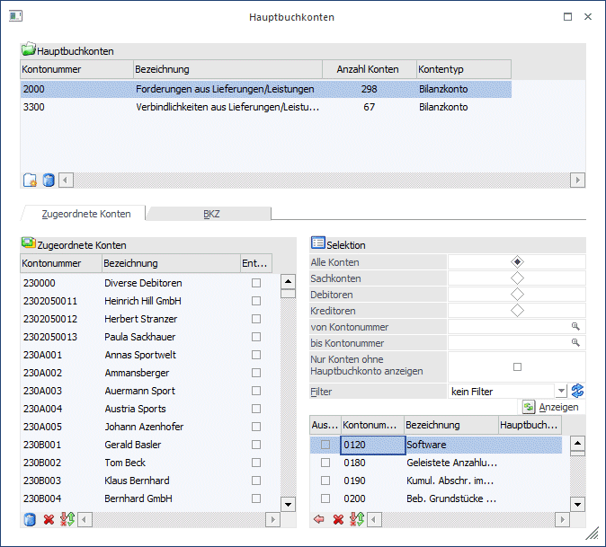
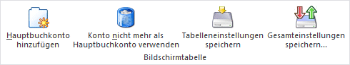
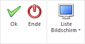

Im Menüpunkt
1 WinLine FIBU
1 Stammdaten
1 Konten
1 Hauptbuchkonten
können bereits bebuchte Konten zu Hauptbuchkonten gemacht werden oder auch die "Als Hauptbuchkonto verwenden" Eigenschaft zurückgesetzt werden.
Außerdem können jedem bestehenden Hauptbuchkonto (auch bereits bebuchte) weitere Nebenbuchkonten zugeordnet werden. Dabei ist es auch möglich, Nebenbuchkonten von einem Hauptbuchkonto zum anderen zu verschieben.

In der oberen Tabelle werden alle bestehenden Hauptbuchkonten angezeigt. Zusätzlich ist für jedes Konto in der Zeile sichtbar, wie viele Nebenbuchkonten bereits dem Hauptbuchkonto zugewiesen wurden und ob es sich beim Hauptbuchkonto um ein Bilanz- oder ein Erfolgskonto handelt.
Tabellenbuttons

Ø Hauptbuchkonto hinzufügen
Mit diesem Button können weitere (schon angelegte) Konten zu Hauptbuchkonten umgestellt werden.
Achtung:
Es wird wie im Kontenstamm geprüft, ob das Konto alle Voraussetzungen dafür erfüllt.
Ø Konto nicht mehr als Hauptbuchkonto verwenden
Mit diesem Button kann die Option "Als Hauptbuchkonto verwenden" für das selektierte Konto deaktiviert werden. Dies ist erst möglich, wenn dem Konto keine Nebenbuchkonten zugeordnet sind.
Buttons

Ø OK
Durch Drücken des OK-Buttons oder der F5-Taste wird der aktivierte Datensatz gespeichert.
Ø Ende
Durch Drücken des Ende-Buttons (oder der ESC-Taste) wird das Fenster geschlossen.
Ø Liste Bildschirm / Liste Drucker
Mit diesem Button kann eine Liste der zugeordneten Nebenbuchkonten wahlweise für alle Hauptbuchkonten bzw. für nur für das aktuell selektierte Hauptbuchkonto auf dem Bildschirm oder dem Drucker ausgegeben werden.